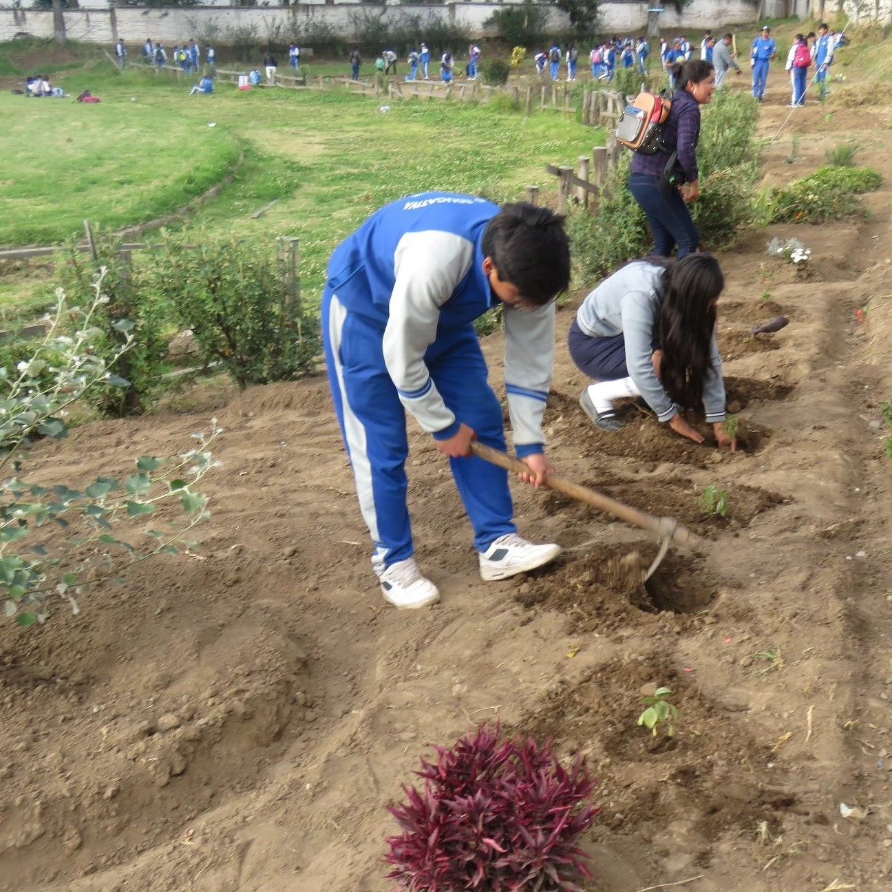
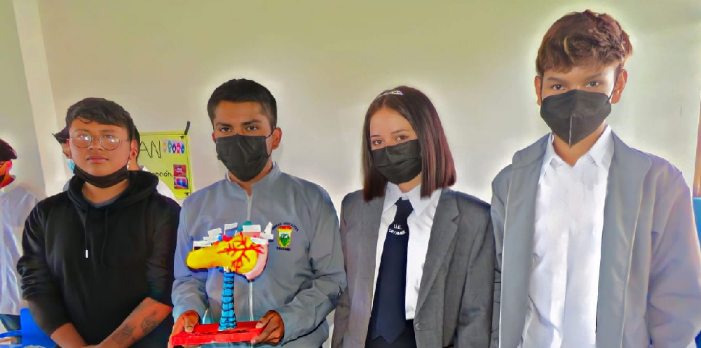
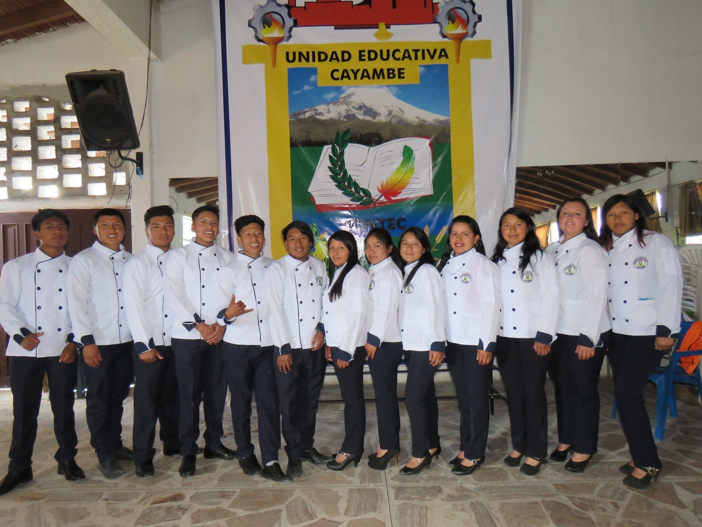

Bacillerato en Producciones Agropecuarias
Bachillerato en Informatica
La Informática es la rama de la Ingeniería que estudia el hardware, las redes de datos y el software necesarios para tratar información de forma automática. Aunque pueda parecerte una definición muy abstracta, estamos seguros de que sabes mucho más de Informática de lo que crees
Las habilidades en informática son demandadas en diversas industrias. Los graduados de un programa de bachillerato en informática pueden buscar empleo en áreas como desarrollo de software, análisis de datos, ciberseguridad y más.
.png)
Perfil de salida
El Perfil de Salida constituye la pieza fundamental a través de la cual, se concretan los principios y fines del sistema educativo español. Esta es la novedad fundamental del currículo y supone la propuesta más determinante para profundizar en el enfoque competencial del aprendizaje y de la enseñanza
En perfil de salida describe las competencias y habilidades que se espera que los estudiantes hayan adquirido al completar un curso, una carrera o un programa educativo.
Bacillerato en Producciones Agropecuarias
Se definen como parte del sector agropecuario las actividades agrícolas, pecuarias, apícolas, avícolas, cunícolas, de caza, crianza de productos del mar y silvicultura, así como la organización empresarial de los servicios agrícolas, agroindustriales y agroexportadores.
La educación práctica y la experiencia en el campo son aspectos esenciales de este tipo de bachillerato. Los estudiantes pueden tener oportunidades para realizar pasantías en granjas, participar en proyectos prácticos y aplicar sus conocimientos en situaciones del mundo real.

Bachillerato en ciencias
El Bachillerato General Unificado BGU, es la etapa final de la educación escolarizada, previa a la continuación de una carrera universitaria, por ello, a más de abarcar los contenidos de las asignaturas del tronco común, prepara a los estudiantes para continuar sus estudios superiores exitosamente
Los estudiantes adquieren habilidades analíticas y de investigación que son valiosas en muchos campos. Aprenden a recopilar datos, analizar resultados y presentar sus hallazgos de manera efectiva Aunque hay un enfoque principal en las ciencias, los programas a menudo permiten cierta flexibilidad para que los estudiantes puedan personalizar su educación según sus intereses específicos dentro del ámbito científico.

BTP
El Bachillerato Técnico Productivo – BTP tiene como propósito fortalecer las capacidades y competencias de los estudiantes en el mundo real del trabajo, articulando la educación media (post bachillerato) con la actividad empresarial, sustentada en la modalidad dual.
Se enfoca en enseñar a los estudiantes sobre los procesos de producción y procesamiento de productos lácteos. Esto puede incluir la manipulación y tratamiento de la leche, la fermentación de productos como el yogur y la elaboración de diferentes tipos de quesos.

Dirreccion:Panamericana Sur Km 2 1/2 via Cayambe - El Quinche, Cayambe, Ecuador
Telf: 0958961231-200-2056-12
uecayambe@gmail.com